Saturn: Personal Health System for your family
Records what the family sends, watches between visits, reviews the history, prepares the next doctor's questions.
My mother has a serious heart condition. My parents live far from good doctors. Between visits, nobody is watching.
Saturn is what I built so that someone is.
It records everything my parents send to a Telegram group, keeps one honest history, and prepares the five questions for the next visit. It does not diagnose. It does not prescribe. Doctors decide. Saturn makes sure they decide with the whole chart in front of them.
Live since 27 October 2026. Self-hosted, for one family, on free tiers and a small home server. Code is public. The data is not, and never will be.
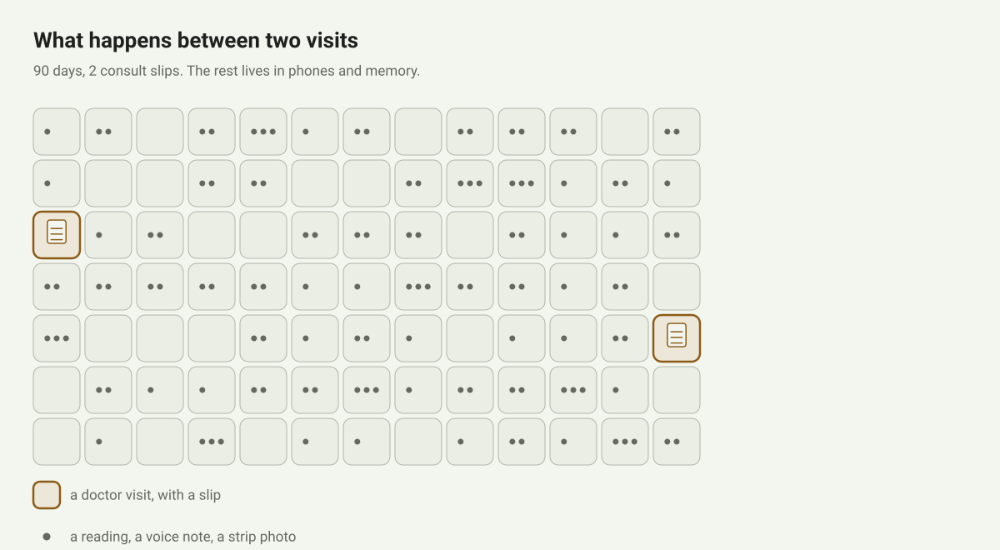
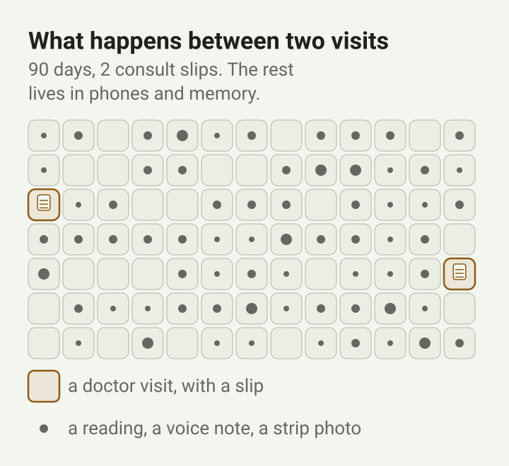
What it has done
- Questions the first loop run raised went to a consult on a slip of paper. Some came back answered. That has never happened before in my family.
- A disagreement between two sources about my mother's episode was kept, shown and settled, instead of silently overwritten.
- Ninety-odd photos and voice notes and about a hundred sources became a thousand-odd facts in ten days, without anyone retyping a number.
- A week of home readings is visible at a glance, on a phone, with a plan line for the week on top.
- All of it for under a dollar a month, on free tiers and a small home server at home.
Ten days in. Under observation, not proven useful. That is the honest line.
The problem, in one visit
Here is how a visit goes.
- Ten minutes. The doctor listens, decides, writes by hand.
- No explanation. No one to call afterwards. No follow-up channel at all.
- My parents nod. They do not push back. They would not know what to ask.
- Next visit in two months, if she is well enough to travel.
- Between the two: nothing. No numbers, no plan, no one watching.
Everything a doctor knows about my mother lives on slips like the one in the folder. The next doctor never sees them.
Three constraints, non-negotiable.
- My parents will not learn a new app. Input has to be the chat they already use.
- Every extra trip costs health, not just money. Output has to be one short list per doctor.
- I have about an hour a night. Whatever this produces has to fit in it.
What Saturn is
A self-hosted home health log for one family: the household's medical record kept by the household (documents, readings, voice notes and the facts pulled from them) in a private git repository the family controls (README). One Telegram group in. One private page out. One button for the hard thinking.
Input
- Photos of the blood-pressure monitor
- Prescriptions and lab reports
- Voice notes in Hindi, about the day
- My replies to the digest
Output
- One honest history, every fact with its source
- A private page: this week's plan, readings, medicines
- Five questions per doctor, in order of stakes
Side effects
- One digest to me each night
- Signed commits to the private records repository
- Nothing to the family group, ever
Three things it never does: diagnose; start, stop or change a medicine; send my parents anything a template did not write. Enforced, not promised: a pattern over every line the system writes fails the run on advice wording, and the bot cannot post to the family group at all (ADR 011).
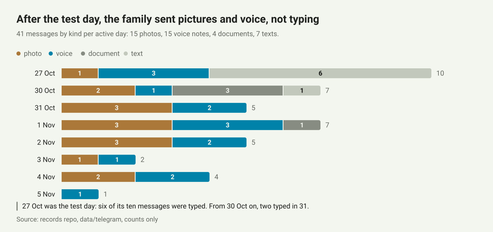
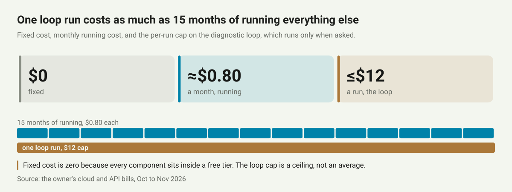

How it works
Once a night. In order.
- The family sends to the Telegram group.
- A Cloudflare Worker stores the raw message in D1 and the media in R2. It does nothing else. Twelve lines.
- The nightly batch commits the raw messages first, then transcribes audio with whisper.cpp and extracts facts in one prompt-in, JSON-out turn that holds no credentials (extract).
- The knowledge base is rebuilt and validated. One bad row fails the build (validate).
- Pages are regenerated. A numbered digest comes to me. I answer "3: yes" from the phone.
- The private site on my home network rebuilds within ten minutes.
The parts
Everything that exists when Saturn is running: who, where, what stores what, what talks to what, and what happens when something fails.
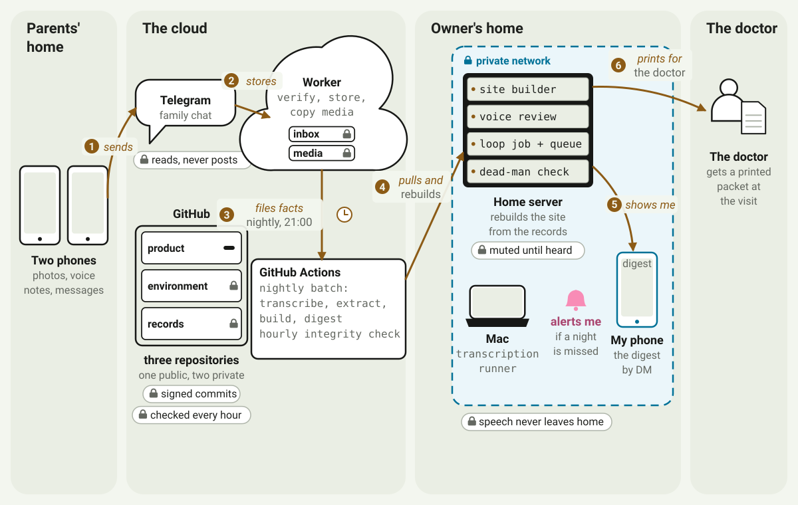
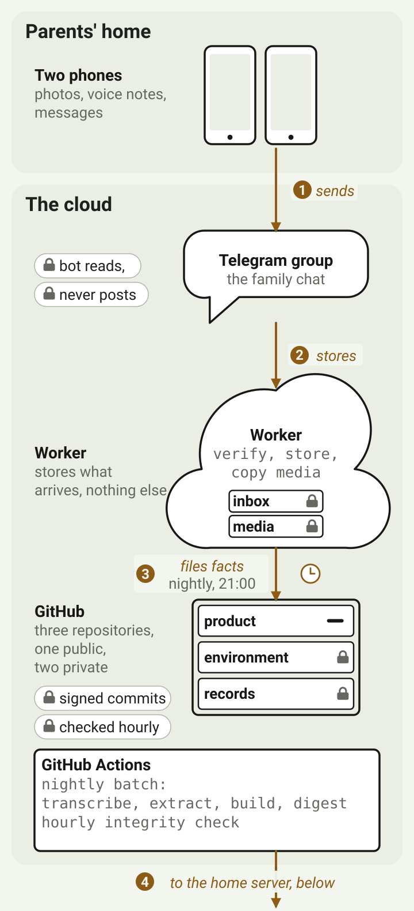
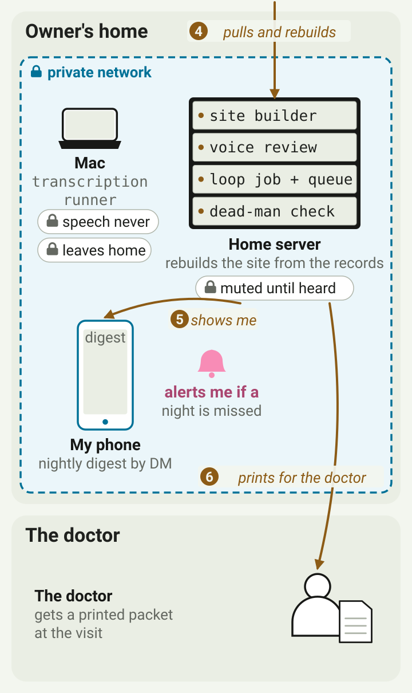
Three side jobs: a Mac that re-transcribes each voice note with speaker labels when it is awake; a review page where I correct a transcript and mark it heard; and the button that runs the loop.
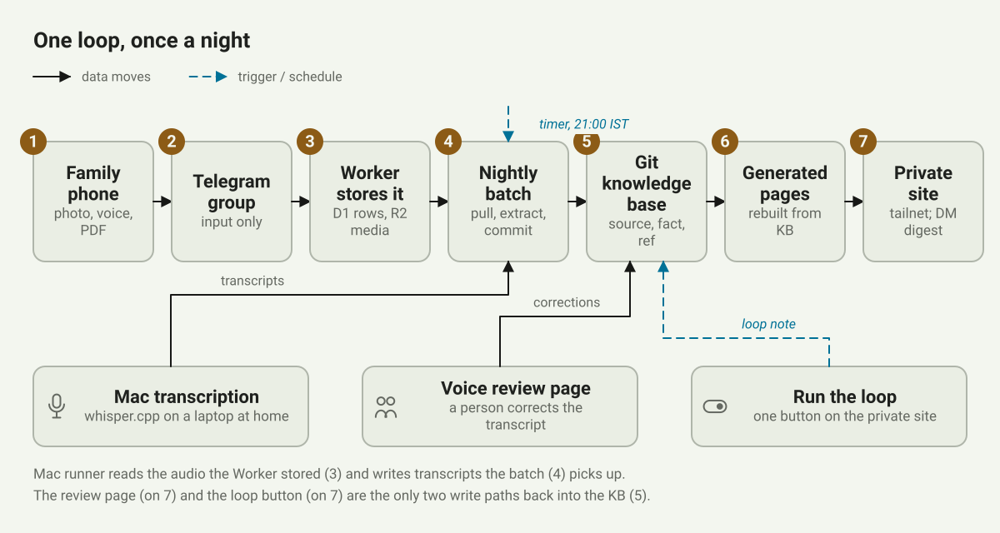

Where the data lives
Three repositories, by content, not by path.
- Product: code and synthetic test data. Public. Names no person, no account, no resource.
- Env: resource ids and encrypted secrets (SOPS). Private. One writer.
- Records: the family's data. Private. No workflows, no secrets.
Three files tie them: the product declares what it needs, the env pins which product commit runs, the records name the people. Another family needs two new repositories and nothing else (ADR 008).
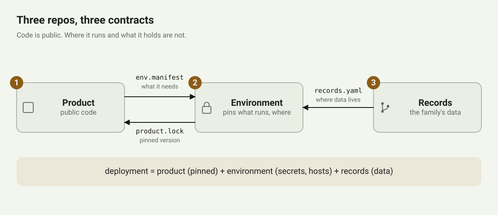
One rule for the record
The knowledge base is newline-delimited JSON in git, rebuilt into SQLite every night. Three tables.
- Source: anything received. A report, a photo, a voice note.
- Fact: one thing pulled from a source. An observation, a medication, a condition, an event. Each carries who said it and the exact quote.
- Ref: a drug, a code, a doctor or a lab.
The rule: a fact is never edited. A correction is a new row that supersedes the old one: the new row points at the old one, the old one is marked superseded, nothing is deleted (schema header). A wrong reading can be shown as wrong instead of made to disappear.
Why it matters: in week one, two sources disagreed about which hand an episode had affected. Both rows are still there. One is marked superseded. The disagreement itself turned out to be the useful part, and an UPDATE statement would have erased it.
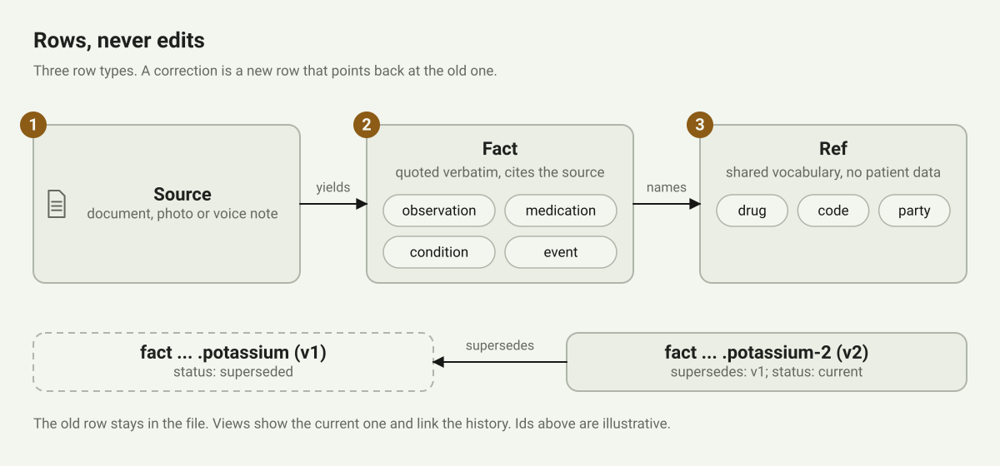
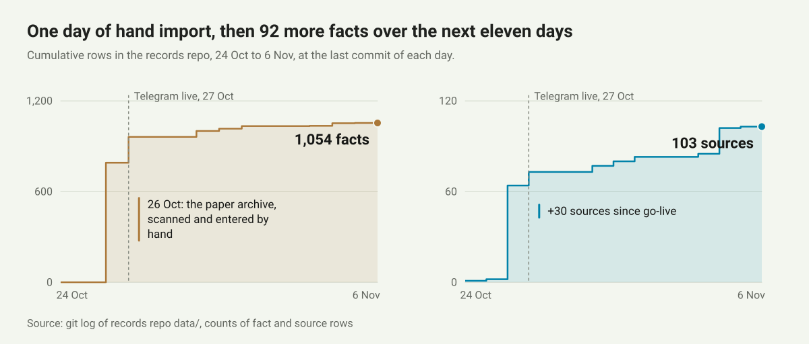
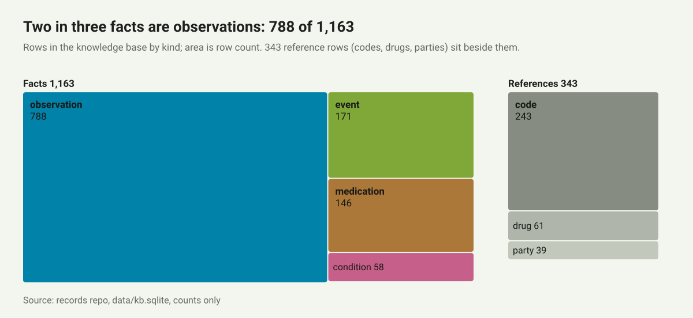
Who may write what
Four writers touch the record: me, the nightly batch, the review page, the loop. Each machine has its own signing key. An hourly check verifies every commit and accepts each machine key only for the paths that job may write (note). None may touch a fact. My key on a commit means I approved it, and nothing else can look like that.
Hindi, on a phone, with the TV on
The voice notes carry the clinical content. When she felt low. What she ate. Which tablet she skipped. Thirty seconds to four minutes, in Hindi, at home.
- Transcribed locally by whisper.cpp, pinned by version and model hash (adapter). Audio never leaves the family's machines.
- Devanagari is primary. No translation pass. The one experiment turned "vomiting" into "fainted".
- A second pass on the Mac with a second engine (MMS) and speaker separation (pyannote), reconciled under one rule: never more specific than what was said.
- Nothing from a machine transcript is shown as a fact. It renders muted, numbers withheld, until a person has heard it (transcript_text).

The loop
Recording was never the hard part. Meaning is. So, on an opt-in switch that lives in my records and nowhere in the product, Saturn runs a structured diagnostic review. The structure follows Microsoft Research's MAI-DxO (Nori et al., 2025): a panel of fixed roles that argue, with a blinded seat and a verifier. Saturn borrows the structure, not the accuracy claims.
- Hypothesis keeps the differential with explicit probabilities and a residual.
- Test-chooser ranks next steps by what would separate the leaders.
- Challenger argues against the leader.
- Stewardship weighs the family's burden: cost, travel, stress. Cheap informative steps first.
- Checklist checks ids, citations, wording.
- A blinded seat writes an independent differential without seeing the debate.
- A citation verifier resolves every DOI and PMID. Unsupported claims are deleted.
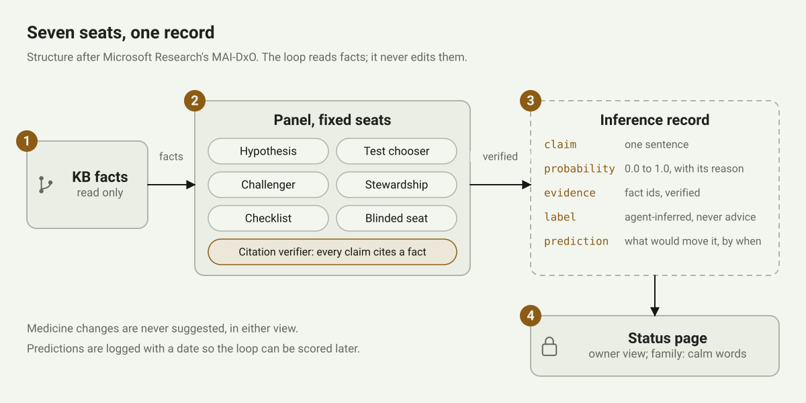
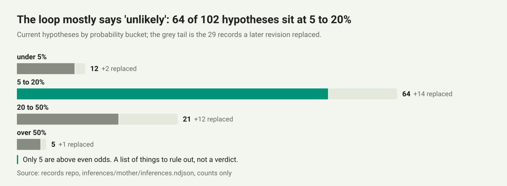
The rails matter more than the panel.
- Red flags are checked first, outside the loop.
- Uncertainty is always shown. No false reassurance.
- Hypotheses reach a doctor only as questions. Five at most, by stakes.
- Medicine advice fails the run (advice_hits).
- Output goes to a run note and an append-only inference register. Never into the facts. Never to my parents.
- One button, one run a day, eight a month, three hours, twelve dollars (tools/dx). My review hour is unchanged. That is the point.
Evolution
Two weeks, seven things caught early. Each one was easy to miss.
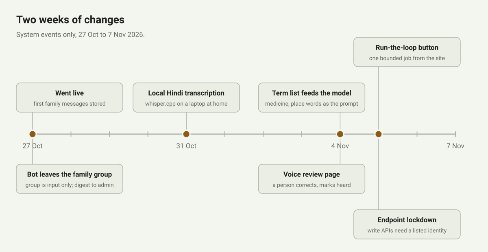
- The bot was talking to my parents. Digest, questions and warnings, partly in Hindi, in the family group. Day one. Moved everything to a private message to me.
- A nag that was not a failure. "Needs a listener" on every voice note, every night, because it excluded only notes in a file nobody had created. Transcription had never failed. Now it lists only what was untranscribed, below 0.5 confidence, or empty (thresholds).
- Silence at 2 a.m. The scheduled run drifted four to seven hours. On the night it failed, nothing said so. Now the home laptop dispatches it before bed and a dead-man check alerts by 03:30 if nothing ran.
- A transcript shown as a fact. Machine text on the front page, next to real readings. Now muted and number-free until heard.
- 739 commits behind. A package audit on the home laptop. One update, one reboot, a weekly check since (security notes).
- A header anyone on the network could set. Two endpoints trusted a login header any device on the private network could forge. Tested from my own laptop; it worked. Now loopback only, behind the proxy that owns the header, one allowed login.
- Unsigned saves. The review page committed without a signature and the integrity check caught it the first time I pressed Save. Now it signs with its own key.
How it got better
Measured, not felt. Every number below comes from the records' own evaluation files; the things I cannot measure yet are named as such.
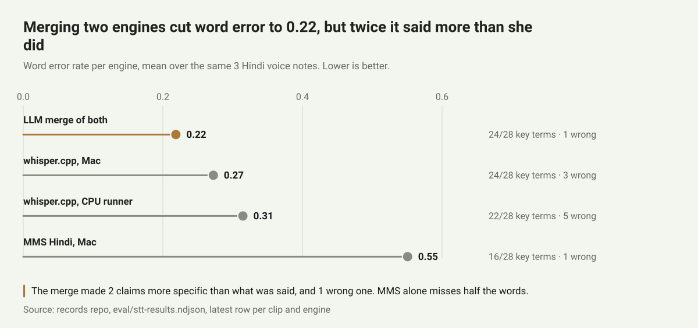
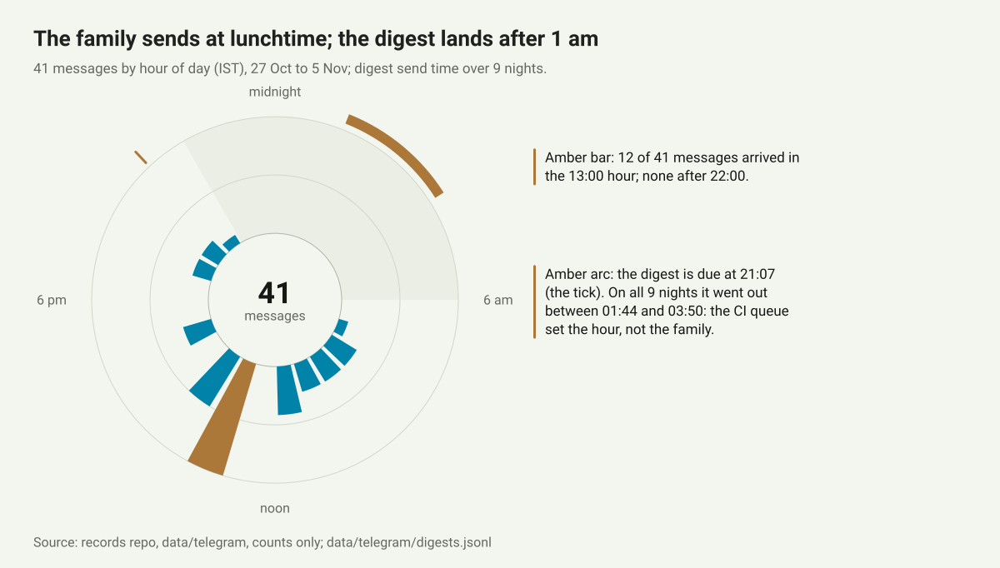
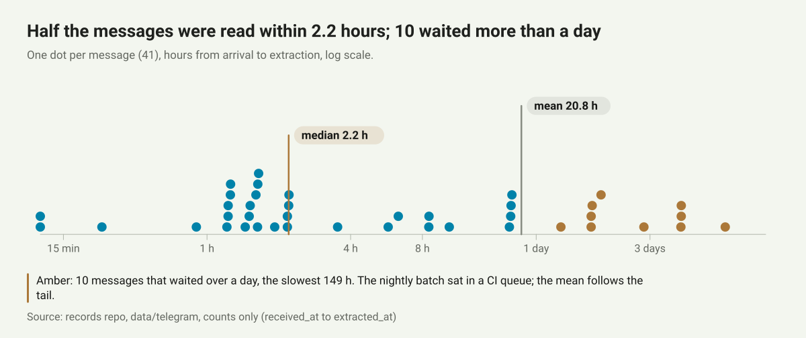
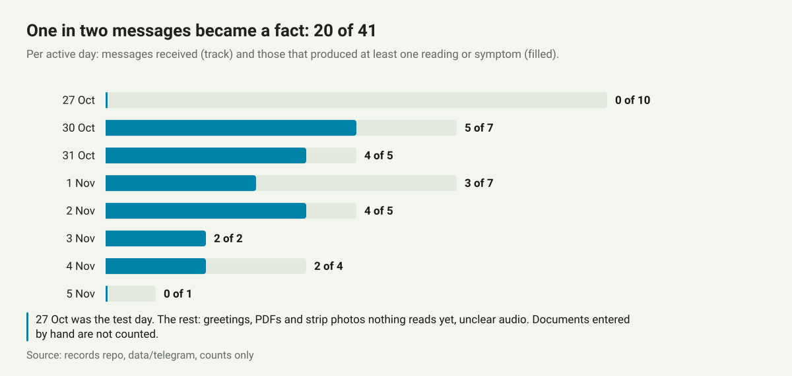
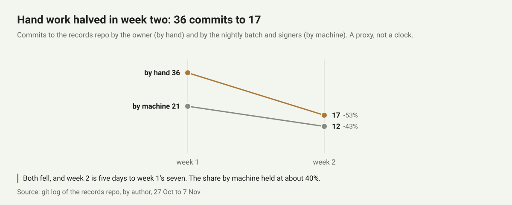
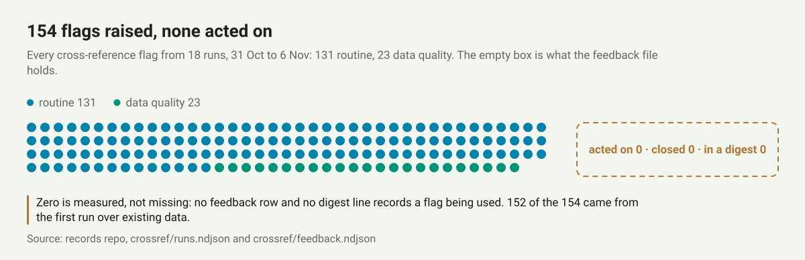
What moved the needle.
- A term list. The family's medicine names as they say them, the places, the Hindi words for symptoms. Passed to whisper as its prompt, capped at 700 characters (PROMPT_CHARS). Expected to help with brand names; not measured yet, because the clips before and after are different recordings.
- A second opinion, bounded. The reconciler once turned "ill" into "fever": a more specific claim than the speaker made. It is now held twice, by the prompt and by a support check against raw engine output (ADR 014).
- Ground truth. Each correction I make is saved beside the audio and grows the evaluation set, so engines are chosen by measured error on my mother's voice, not on a benchmark.
- Lag. Median 2.2 hours from message to extraction, but a mean of 20.8, because the nightly run drifted and some documents waited days. The home laptop now dispatches the run before bed; too few runs since to report.
- Not yet measured: the loop's accuracy. Fifteen predictions logged, one resolved, one withdrawn. The cross-checks raised 154 flags and zero were acted on; they are out of the digest until one earns its place.
Where it is going
Where it stands today, and what comes next. Ten days in; nothing here is finished.
- Documents still need a person. Photos of readings and voice notes land on their own; a handwritten slip waits in a list for me. The document reader is next.
- My parents send and hear nothing back. A calm one-line receipt to my father is designed and not built.
- The loop's accuracy is unmeasured until predictions resolve. They are logged; they will.
- One family, one deployment, one admin. Nobody else has installed it yet.
- Not a medical device. Not advice. The pages say so on every screen, and the interpretation mode stays off unless a records owner turns it on.
Next, in order.
- Close the input loop. A document reader behind the same kind of button, so a photographed prescription becomes facts without me.
- Score the loop. Weekly runs, predictions scored against what doctors find. Keep it only if the calibration earns it.
- Give the family something back. One template line a day: received, and what to measure tomorrow.
- Protect the review hour. Agents produce faster than one person reads. Every new surface has to close a loop, or it does not ship.
- A second family. The three-repo split exists for this. It has not been tested by anyone but me.
Research this builds on
Saturn's methods lean on published work. The design record for the loop cites these; the ones that shaped it most are first.
The works that shaped it most (12)
- Nori H et al. Sequential diagnosis with language models (MAI-DxO). Microsoft Research, 2025, preprint. The panel structure.
- McDuff D et al. Towards accurate differential diagnosis with large language models. Nature 2025.
- Kanjee Z, Crowe B, Rodman A. Accuracy of a generative AI model in a complex diagnostic challenge. JAMA 2023.
- Tu T et al. Towards conversational diagnostic artificial intelligence. Nature 2025.
- Goh E et al. Large language model influence on diagnostic reasoning: a randomized clinical trial. JAMA Network Open 2024. Why a human reviews every run.
- Hager P et al. Evaluation and mitigation of the limitations of large language models in clinical decision-making. Nature Medicine 2024. Why the rails exist.
- Chen S et al. When helpfulness backfires: LLMs and the risk of false medical information due to sycophantic behavior. npj Digital Medicine 2025. Why there is a Challenger and a blinded seat.
- Wu K et al. An automated framework for assessing how well LLMs cite relevant medical references (SourceCheckup). Nature Communications 2025. Why there is a citation verifier.
- Goddard K, Roudsari A, Wyatt JC. Automation bias: a systematic review. JAMIA 2012. Why output is framed as questions.
- Ely JW, Graber ML, Croskerry P. Checklists to reduce diagnostic errors. Academic Medicine 2011. The Checklist seat.
- National Academies. Improving Diagnosis in Health Care. 2015.
- Radford A et al. Robust speech recognition via large-scale weak supervision (Whisper). 2022. Pratap V et al. Scaling speech technology to 1,000+ languages (MMS). 2023. Bredin H. pyannote.audio.
The full list
Everything the loop's design record cites (28 more)
Grouped as the design record groups them. Accessed 31 October 2026.
Diagnosis with language models.
- Brodeur PG et al. Superhuman performance of a large language model on the reasoning tasks of a physician. arXiv 2024; reported in Science 2026.
- DeepRare: An agentic system for rare disease diagnosis with traceable reasoning. Nature 2026.
- Goh E et al. GPT-4 assistance for improvement of physician performance on patient care tasks: a randomized controlled trial. Nature Medicine 2025.
Failure modes.
- Schmidgall S et al. Addressing cognitive bias in medical language models (BiasMedQA). arXiv 2024.
- Walters WH, Wilder EI. Fabrication and errors in the bibliographic citations generated by ChatGPT. Scientific Reports 2023.
- Calibration of LLM confidence on USMLE-style questions. Journal of Medical Internet Research 2025, e64348.
Techniques.
- Nori H et al. Can generalist foundation models outcompete special-purpose tuning? (Medprompt). arXiv 2023.
- Kim Y et al. MDAgents: an adaptive collaboration of LLMs for medical decision-making. NeurIPS 2024.
- Multi-agent conversation for rare-disease diagnosis. npj Digital Medicine 2025.
- Xiong G et al. Benchmarking retrieval-augmented generation for medicine (MedRAG). Findings of ACL 2024.
- Zakka C et al. Almanac: retrieval-augmented language models for clinical medicine. NEJM AI 2024.
- Savage T et al. Diagnostic reasoning prompts reveal the potential for large language model interpretability in medicine. npj Digital Medicine 2024.
Diagnostic error and the human side.
- Singh H, Meyer AND, Thomas EJ. The frequency of diagnostic errors in outpatient care. BMJ Quality & Safety 2014.
- Newman-Toker DE et al. Burden of serious harms from diagnostic error in the USA. BMJ Quality & Safety 2024.
- Graber ML, Franklin N, Gordon R. Diagnostic error in internal medicine. Archives of Internal Medicine 2005.
- Croskerry P. Cognitive forcing strategies in clinical decisionmaking. Annals of Emergency Medicine 2003.
- Sherbino J et al. Ineffectiveness of cognitive forcing strategies to reduce biases in diagnostic reasoning: a controlled trial. CJEM 2014.
- Splinter K et al. Effect of genetic diagnosis on patients with previously undiagnosed disease. NEJM 2018.
- Faye F et al. Time to diagnosis and determinants of diagnostic delays of people living with a rare disease. European Journal of Human Genetics 2024.
- Meyer AND, Longhurst CA, Singh H. Crowdsourcing diagnosis for patients with undiagnosed illnesses. Journal of Medical Internet Research 2016.
- Small studies of patient-activated rhythm recorders and symptom-rhythm correlation; wearable-patch data on low correlation when symptoms are not daily.
Automation bias, symptom checkers, uncertainty, the relationship.
- Dratsch T et al. Automation bias in mammography. Radiology 2023.
- Jabbour S et al. Measuring the impact of AI in the diagnosis of hospitalized patients. JAMA 2023.
- Semigran HL et al. Evaluation of symptom checkers for self diagnosis and triage. BMJ 2015.
- Wallace W et al. The diagnostic and triage accuracy of digital and online symptom checker tools. npj Digital Medicine 2022.
- van der Bles AM et al. Communicating uncertainty about facts, numbers and science. Royal Society Open Science 2019.
- Tan SS-L, Goonawardene N. Internet health information seeking and the patient-physician relationship. Journal of Medical Internet Research 2017.
Regulation.
- US FDA. Clinical Decision Support Software: guidance for industry and FDA staff. 2022, revised 2026. Why interpretation mode is off by default.
The code and the design records are in the product repository. The records are not, and will not be.